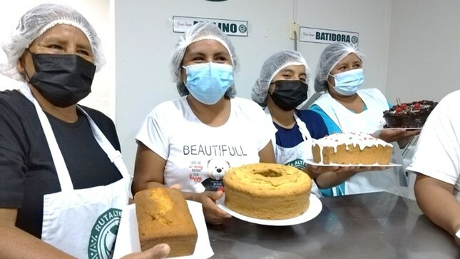

| Panadería y Pastelería | |
| 1. ELABORACIÓN DE PRODUCTOS DE PASTELERÍA: | |
Producción de masas dulces y saladas. Producción de productos de pastelería. Preparación de cremas y decoración de tortas. |
|
| 2. ELABORACIÓN DE TORTAS COMERCIALES: | |
| Producción y decoración de tortas semifríos, con cremas y frutas de estación. | |
| 3. ELABORACIÓN DE PRODUCTOS DE PASTELERÍA: |  |
| Producción de panes comerciales, enriquecidos y especiales (dulces y salados) | |